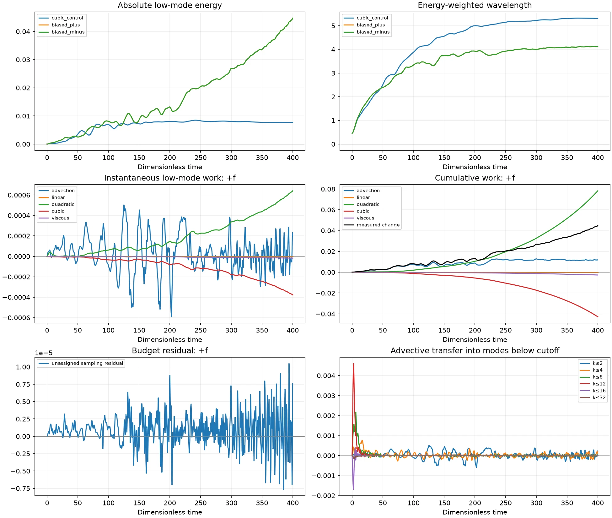

The completed formation audit separates advective transfer from direct polynomial forcing. A matched experiment now disables only advection. A small Galerkin projection is judged against withheld dynamics, rather than vortex appearance.
Status recorded November 18, 2026. Computation, diagnostics and rendering on Unity. Dimensionless time; these are horizontal 2D models, not atmospheric day counts.
This is the completed advection-on reference used by the analysis. The new advection-on/off comparison movie is queued after the matched run reaches t=400.
One horizontal vorticity plane, no tracer or depth layers. Positive vorticity is cyclonic for f=+1. Existing fixed symmetric asinh scale; no new simulation is represented by this reference movie.
Over t=0–400, the quadratic source supplies +0.07826 units of energy to 0<|k|≤2, compared with +0.01192 from advection. Cubic saturation removes 0.04278 and viscosity removes 0.002655, leaving a measured increase of 0.04475. Thus direct polynomial input is important during formation as well as maintenance. This does not exclude advective transfer or establish the mechanism of actual convection.
The cubic-only control receives +0.009489 through advection and ends with a low-mode energy increase of 0.007674. Removing the quadratic source does not remove all transfer toward large scales.

| Time interval | Advection | Quadratic | Cubic | Viscosity | Measured ΔE | Residual |
|---|---|---|---|---|---|---|
| 0–80 | +0.005743 | +0.000971 | -0.000614 | -0.000107 | +0.005994 | +5.13e-07 |
| 80–160 | +0.001300 | +0.005250 | -0.002735 | -0.000261 | +0.003557 | +2.53e-06 |
| 160–240 | +0.005308 | +0.011244 | -0.005990 | -0.000404 | +0.010157 | -2.33e-06 |
| 240–320 | -0.001066 | +0.022196 | -0.011652 | -0.000756 | +0.008719 | -3.34e-06 |
| 320–400 | +0.000640 | +0.038594 | -0.021794 | -0.001128 | +0.016321 | +1.02e-05 |
| 0–400 | +0.011925 | +0.078255 | -0.042784 | -0.002655 | +0.044749 | +7.59e-06 |
Native-validated centered momentum flux, native discrete inverse Laplacian, Float32 saved fields. Work uses half-unit trapezoidal sampling, not exact every-stage integration. Unit-interval sensitivity is included in the report. The full-interval residual is 7.59×10⁻⁶; it is retained as an error, not assigned to convection or another physical source.
Mode selection used t≤200; t=210–400 was withheld. The coefficients and phase-dependent native interactions are unchanged. Even the 140-dimensional candidate retains 96.2% of kinetic energy while missing 39.9% of the quadratic and 69.2% of the cubic low-mode tendency in the declared RMS norm. Retaining energy is insufficient to retain the nonlinear feedback.
| Real dimensions | Energy retained | Total RHS error | Quadratic error | Cubic error | ≤20% gate |
|---|---|---|---|---|---|
| 44 | 85.0% | 61.4% | 70.0% | 91.6% | Not passed |
| 76 | 91.5% | 27.8% | 56.0% | 83.5% | Not passed |
| 140 | 96.2% | 13.1% | 39.9% | 69.2% | Not passed |
No candidate passed all source checks, so none was integrated and no larger-mode sweep was triggered. The exact coupling implementation passed independent full-grid checks; model accuracy is a separate requirement. The entire withheld-output audit took about four CPU-seconds.
Only native momentum advection is disabled. Domain 2π×2π; 512²; f=+1; beta=0; ν=10⁻⁴; instability coefficient 0.0002 in band 12–16 excluding kx=0; mean-subtracted source 0.002ζ²−0.0002ζ³; identical original velocity file. No added drag or hyperviscosity. Five checkpointed 80-unit segments use one CPU each, with a total three-CPU-hour production limit. Subsequent jobs wait if a segment fails.
Sixteen release tests passed, including native tendency comparison, restart, timestep refinement, potential descent and runtime. The saved-output test passed. The first wrapper incorrectly allowed a shared environment to reset Julia to four threads on one allocated CPU; it timed out after ten minutes before production. The corrected one-thread wrapper passed and measured 0.036 seconds per step. That failure is retained in the campaign record.
The earlier days 90–95 fit / days 95–100 test is reused. A quadratic source captures part of the central-third-moment production, but spatial prediction barely improves on a linear baseline; large-scale source-work predictions are poor. An unconstrained fit does not support cubic damping. The separate native budget closes, while physical attribution remains limited by centered/native transport differences. These failures are not hidden by refitting coefficients.
Existing Breeze closure test and three-depth movie · Native sign-budget audit
Formation report · Galerkin prediction tests · Convection evidence audit · Release checks · Saved-output check · Protocol and mathematical derivation